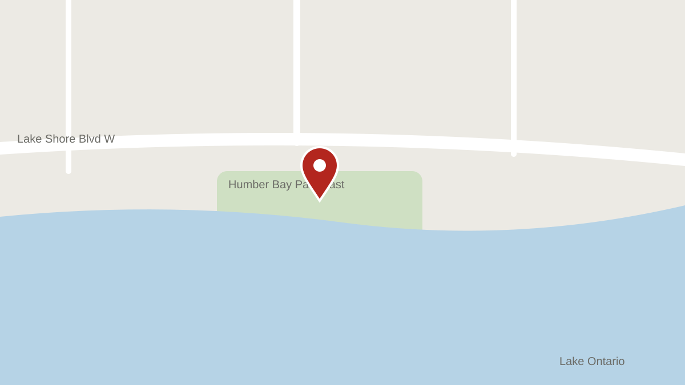

Outdoor spots
Distillery District
Location

43.6503, -79.3596Open in a map app (opens in a new tab)
How to get there
- Transit
- Take the 504 King streetcar to Parliament St and walk 5 minutes south.
- Driving
- Paid parking on Mill St and in the lot at Cherry St; expect $20 for 3 hours.
- Walking
- 15 minutes east of St. Lawrence Market along Front St.
Best light
By time of day
- MorningMedium
Low sun down Trinity St lights the brick facades.
- MiddayLow
Lanes fall into hard shade.
- AfternoonMedium
Open shade on Gristmill Lane is even and soft.
- Golden hourStrong
Warm light down Mill St from the west.
- Blue hourMedium
String lights come on over Trinity St.
By season
- Spring
Quiet weekdays; patios open in May.
- Summer
Crowded on weekends from 11 am.
- Autumn
Even light most of the day.
- Winter
The Christmas Market fills the lanes from mid-November.
Sample shots
50 mmTrinity St looking north, couple centred on the cobbles 85 mmAgainst the brick on Gristmill Lane 35 mmUnder the Love Locks sculpture at dusk
Permits
Permit rules may be out of dateWe last checked them on March 20, 2026, more than six months ago. Confirm with the official source before you book a shoot.
| Shoot type | Permit |
|---|---|
| Portrait | Required |
| Wedding or engagement | Required |
| Commercial | Required |
| Video | Required |
Permit rules verified March 20, 2026 (207 days ago).
Official source: The Distillery District: Photography policy (opens in a new tab)
Best for
Engagement, Brand, Portrait
Rain backup
The nearest reviewed studios, in a straight line.